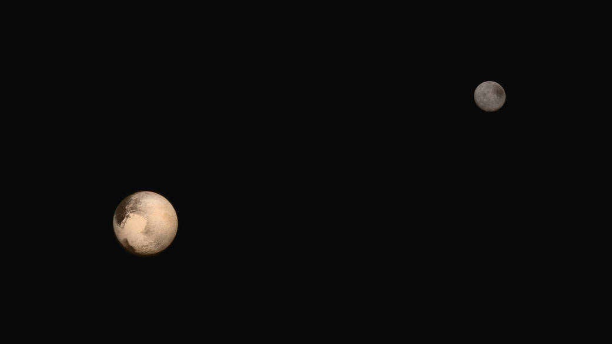
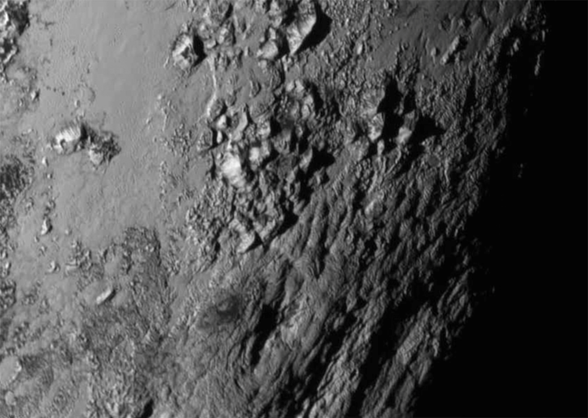

New Horizons Flyby Captures Amazing New Images of Pluto
/ Space TravelOn Tuesday, NASA's space probe New Horizons reached Pluto. It was launched nearly a decade ago on January 19, 2006 to collect data about the dwarf planet, among other targets. With its flyby on Tuesday it became the first spacecraft to capture clear images of Pluto.
High-res images sent back from the probe reveal many unexpected features of the planet's geology, including mountains, an atmosphere and icy plains.
Among the most surprising revelations is Pluto's active surface geology, which has scoured away asteriod impact craters. "We have not found a single impact crater on this image. This means it must be a very young surface", Mission scientist John Spencer said. He put the age of the current surface at no more than 100 million years.
Also captured in the images is Pluto's largest moon, Charon, rotating in its 6.4-day long orbit. These images show Charon to be similarly impact-free.

New close-up images of a region near Pluto's equator reveal a giant surprise: a range of youthful mountains rising as high as 11,000 feet (3,500 meters) above the surface of the icy body.
The mountains likely formed no more than 100 million years ago -- mere youngsters relative to the 4.56-billion-year age of the solar system -- and may still be in the process of building, says Geology, Geophysics and Imaging (GGI) team leader Jeff Moore of NASA's Ames Research Center in Moffett Field, California.. That suggests the close-up region, which covers less than one percent of Pluto's surface, may still be geologically active today.
Moore and his colleagues base the youthful age estimate on the lack of craters in this scene. Like the rest of Pluto, this region would presumably have been pummeled by space debris for billions of years and would have once been heavily cratered -- unless recent activity had given the region a facelift, erasing those pockmarks.
"This is one of the youngest surfaces we've ever seen in the solar system," says Moore.
Unlike the icy moons of giant planets, Pluto cannot be heated by gravitational interactions with a much larger planetary body. Some other process must be generating the mountainous landscape.
"This may cause us to rethink what powers geological activity on many other icy worlds," says GGI deputy team leader John Spencer of the Southwest Research Institute in Boulder, Colo.
The mountains are probably composed of Pluto's water-ice "bedrock."
Although methane and nitrogen ice covers much of the surface of Pluto, these materials are not strong enough to build the mountains. Instead, a stiffer material, most likely water-ice, created the peaks. "At Pluto's temperatures, water-ice behaves more like rock," said deputy GGI lead Bill McKinnon of Washington University, St. Louis.

The close-up image was taken about 1.5 hours before New Horizons closest approach to Pluto, when the craft was 47,800 miles (77,000 kilometers) from the surface of the planet. The image easily resolves structures smaller than a mile across.
Since it was discovered in 1930, Pluto has remained an enigma. It orbits our sun more than 3 billion miles (about 5 billion kilometers) from Earth, and researchers have struggled to discern any details about its surface. These latest New Horizons images allow the mission science team to detect clear differences in brightness across Pluto's surface as it rotates.
"After traveling more than nine years through space, it's stunning to see Pluto, literally a dot of light as seen from Earth, becoming a real place right before our eyes," said Alan Stern, New Horizons principal investigator at Southwest Research Institute in Boulder, Colorado. "These incredible images are the first in which we can begin to see detail on Pluto, and they are already showing us that Pluto has a complex surface."